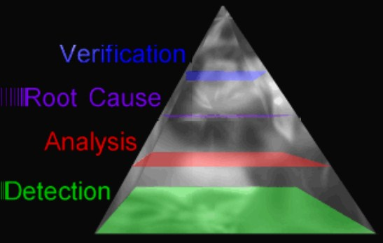
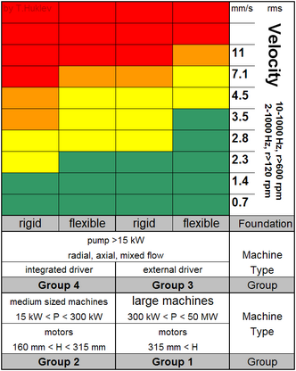
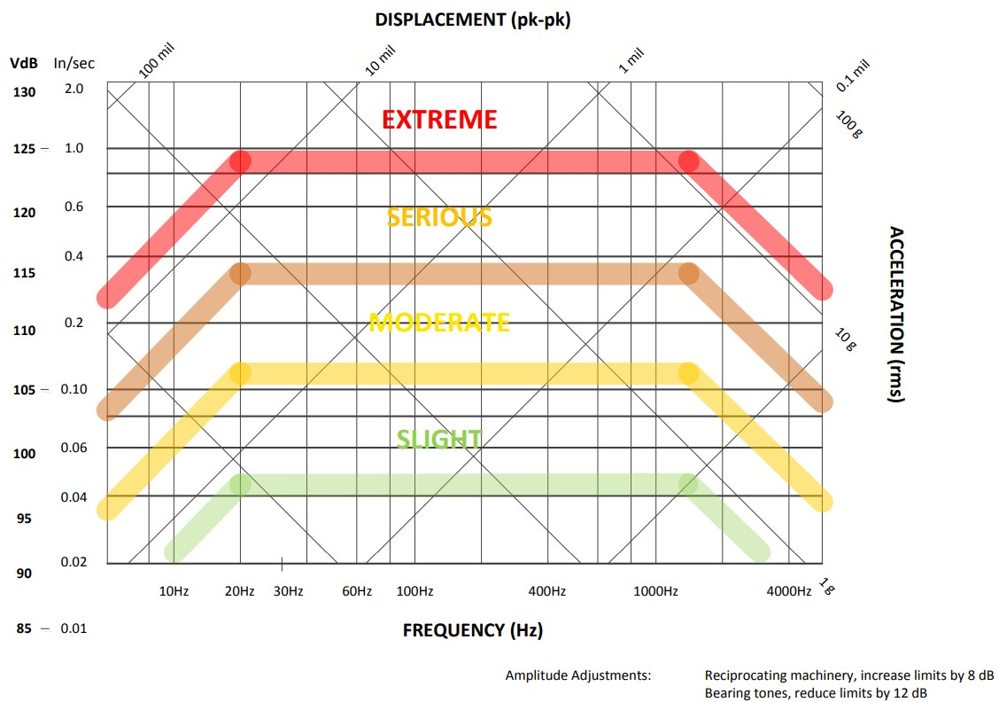
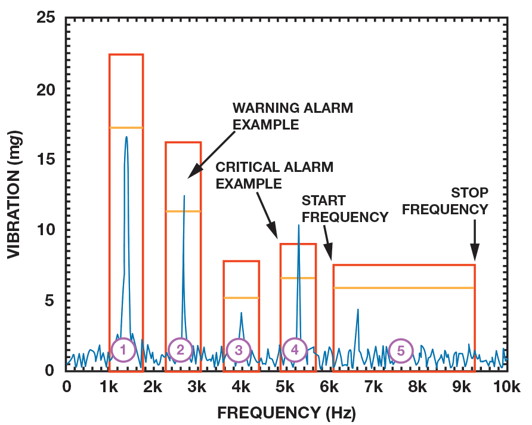
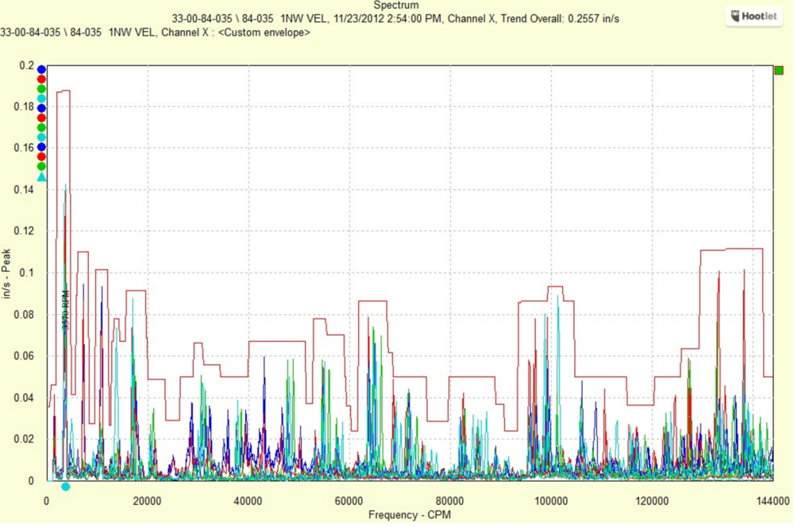
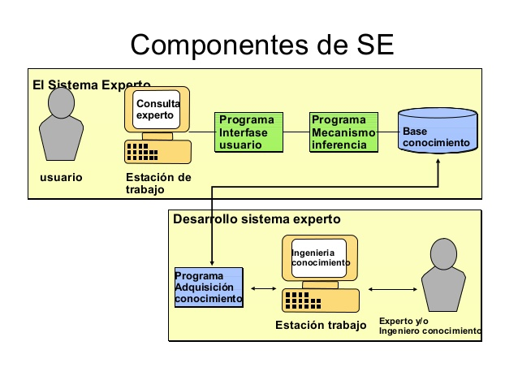

En esta sesión nos centraremos en como revisar los datos de vibración con el fin de determinar si existe un problema.
El analisis de cada una de las mediciones y su posterior comparación puede llegar a ser abrumadora. Haria falta mucho tiempo, nivel de concentración y perseverancia.
Necesitamos describir un metodo que permita evitar la perdida de pistas de cruciales en la detección de problemas. (Existen muchos casos donde se recopilan datos pero no se llega a detectar fallas en su debido momento ocasionando grandes perdidas)
La forma de la piramide representa el número de máquinas involucradas en cada fase (no representa el tiempo, esfuerzo, importancia o habilidades requeridas)

El objetivo debe ser dejar atras la base de la piramide tan rápido como te sea posible, para pasar mas tiempo en la cima:
La mayoria de los sofwares de vibración generan reportes de excepción.
El sofware escanea todas las medidas de vibración, las compara con limites de alarma, opcionalmente contra lecturas previas, y entonces genera una lista de máquinas con los resultados.
Los resultados del informe indicarán que máquinas fallas, asi como su severidad y nivel de excedencia (% o dB).
Al tener una nueva lectura, uno de los mayores retos es saber cuales deberian ser los niveles de alarmas
¿En que punto se recomienda reparación? ¿En qué punto debo preocuparme y hacer un mayor seguimiento a una maquina?
Los niveles de referencia son dictados por muchos factores. El tamaño de máquina, la criticidad, la carga a la que esta sometida y el historial son muy importantes.
Hay dos maneras de fijar un nivel de alarma.
Durante muchos años se ha intentado tabular todo tipo de máquinas y los correspondientes niveles de vibración.
Estos intentos han sido llevados a cabo por distribuidores de sofware, compañias y organizaciones similares.
El resultado son las siguientes tablas:


Teniendo en cuenta que todas las máquinas son diferentes (operan bajo diferentes cargas, estan montadas de diferente manera, diferente fabricación, etc), incluso en aquellas que son similares, aplicar limites publicados y fijados puede llevarnos a desechar maquinas en buen estado o a sobrexigirlas cuando su estado no es el adecuado.
Se recomienda comenzar con limites publicados, y después de que hayan sido tomadas varias lecturas, pasar a limites calculados. Para esto tiene que pasar bastante tiempo para tener una buena idea de la condición de la máquina.
Basándonos en la afirmación, de que una máquina tiene problemas si sus niveles de vibración superan el doble de los niveles saludables, podemos trazar una linea base y fijar ahi los límites.
Una linea base es una medida ideal que creemos que mejor representa cómo debieria vibrar la máquina. Es una medida que podemos usar para comparar, con el fin de determinar si ha ocurrido algún cambio.
Existen estrategias para determinar la linea base:
Sea cual sea la estrategia para obetenr los limites de alarma, existen diversos metodos o técnicas de detección:
Se calcula el valor de vibracion (RMS, promedio, pk o pk-pk) en un rango de frecuencias que contengan picos caracteristicos y se comprueba sí exceden limites.

El limite de alarma se aplica al espectro completo, en vez de fraccionario en bandas. Potencialmente más sensible a los picos que puedan aparecer a frecuencias inesperadas pero con un informe de excepción no tan espefico.

Un sistema expero es un sofware que es capaz de tomar datos de entrada y proveer información util de sálida. En la mayoria de los casos, el proceso requiere realizar cálculos, y tomar decisiones.
Un sistema experto esta diseñado por un ingeniero del conocimiento en base a los conocimientos de un profesional experto proporcionando ayuda a personas con poca experiencia para resolver problemas que requieren un "conocimiento formal especializado"
Un sistema experto esta diseñado alrededor de reglas. Por ejemplo Si la vibración a 1X es alta en vertical y horizontal, y no tan alta en axial y la vibracion a 2X no es alta, tenemos un desequilibrio
Los sistemas expertos, cuando se configuran correctamente, son capaces de filtrar información, y en algunos casos proveer diagnóstico y recomendaciones.

Los obetivos son los mismo que los del sistema experto; revisar datos de vibración y realizar un diagnóstico. SIn embargo los sistemas AI (o redes neuronales) trabajan de diferente manera a los sistemas exertos.
Los sistemas expertos estan diseñados sobre unas reglas. Los sistemas AI aprenden o desarrollan sus propias reglas.
Alimentas con una serie de datos e indicas que significan. Proceso repetitivo.
Thank You ˊ・ω・ˋ
{kind=link}